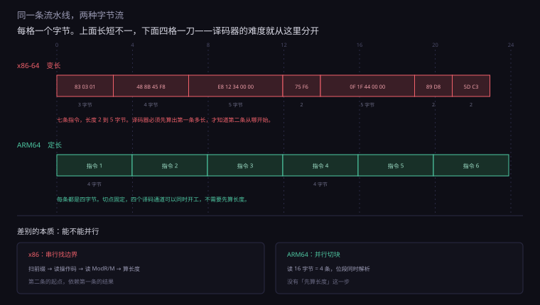
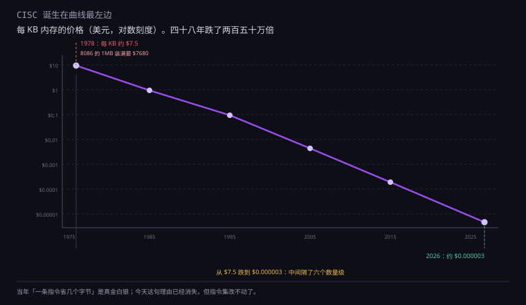
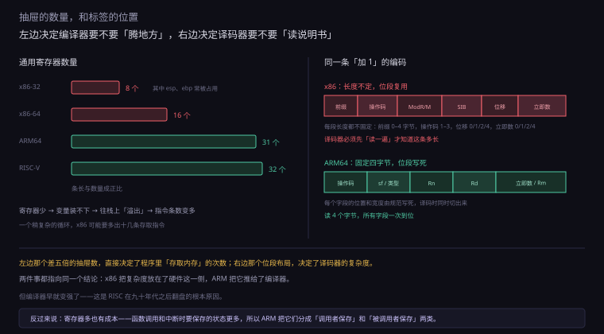
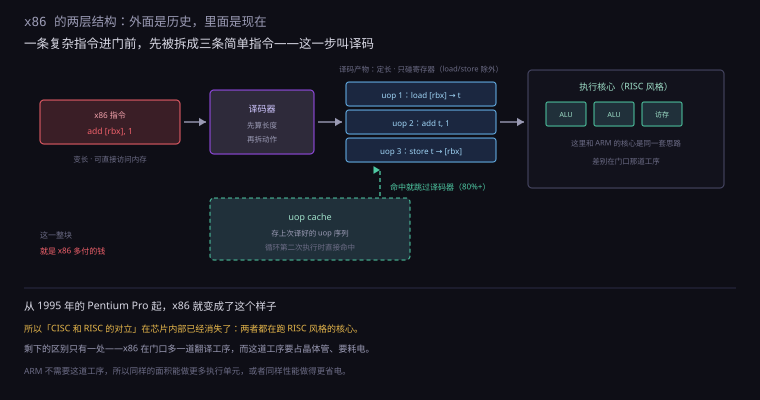
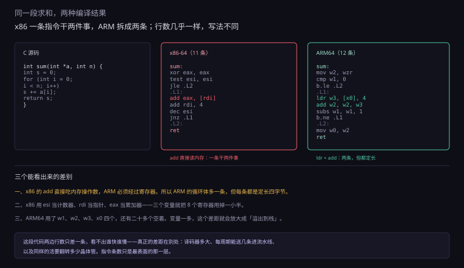

约 1.1 万字 · 6 张图 · 读完你能看懂「一条指令有多复杂」这件事， 为什么它影响功耗、面积和价格，以及为什么「RISC 更先进」这个说法只对了一半
先看两行「汇编」，它们干的是同一件事：把内存里一个数加 1。
x86 的写法：add dword [rbx], 1
ARM64 的写法：
ldr w0, [x1] / add w0, w0, #1 / str w0, [x1]
第一条是一条指令：从寄存器 rbx 指向的地址读 4 个字节， 加 1，再写回去。三个动作，一条指令。
第二条是三条指令：读进寄存器、在寄存器里加、写回内存。 每一步都要自己写。
这就是 CISC 和 RISC 最直观的区别： 一条指令里塞多少活。 塞得多的叫复杂指令集（CISC，Complex Instruction Set Computer）， 塞得少的叫精简指令集（RISC，Reduced Instruction Set Computer）。
名字听起来像「高级 vs 低级」，其实是一次交易的两种付法： CISC 把复杂度放在硬件里（一条指令干三件事）， RISC 把复杂度放在编译器里（三条指令，程序员或编译器自己排）。
因为它直接决定三件你在乎的事：
一是芯片面积。规则越复杂，译码电路越大。 一颗现代 x86 芯片里，负责「把指令翻译成内部动作」的电路， 占了相当大的面积——这些晶体管不参与计算，只参与「理解」。
二是功耗。晶体管在开关时耗电，不开关时几乎不耗。 译码电路每个周期都在满负荷工作，它是芯片里最「忙」的模块之一。 而功耗，是手机和笔记本的第一约束。
三是软件生态。指令集是软件和硬件之间唯一的契约。 换指令集，所有二进制程序都要重编——这是 x86 活了四十年、 ARM 上不了桌面（直到最近）的根本原因。
汇编只是给人看的。真正存进内存、送进 CPU 的，是字节。
add dword [rbx], 1 编译出来是三个字节：
83 03 01。
注意第二项：一个字节里塞了三件事——寻址方式、目标寄存器、位移长度。 这种「位段复用」在 x86 里到处都是，也是它编码紧凑的原因。
ARM64 的 add w0, w0, #1 是四个字节，
但它是固定位段：哪几位是操作码、哪几位是源寄存器、
哪几位是目标寄存器、哪几位是立即数，全写死在规范里。
这个差别在「人」看来没什么，在「电路」看来是两回事。 x86 的译码器要先判断「这个 03 到底是 ModR/M 还是别的什么」， ARM 的译码器直接按位置切。 前者是一台需要读说明书的机器，后者是一台按模板切的机器。

要理解 CISC 为什么长成那样，得回到它诞生的年代。
1978 年，Intel 发布 8086。它有 29000 个晶体管， 主频 5 到 10 MHz，地址空间 1MB。 同年，一 KB 内存的价格大约是 7 到 8 美元。
算一下：8086 能寻址的 1MB，如果全部装满内存， 成本是 1024 × 7.5 ≈ 7680 美元。 而那颗 CPU 本身卖几十美元。
内存比处理器贵两个数量级。这个事实决定了一切。
当时的程序要装进很小的内存里，而指令存在内存里、占内存空间。 所以有一个非常实际的目标：让每条指令尽量多干活，让程序尽量短。
一条 add [bx], 1 只占 3 到 4 个字节，
换成「读、加、写」三条就是 8 到 10 个字节。
在内存按 KB 算钱的年代，这个差别是真金白银。
复杂指令不是为了「高级」，是为了「省内存」。
1970 年代的编译器很弱。让它去分配寄存器、安排指令顺序、优化循环， 它做不好。而 CISC 的指令「一条顶三条」， 编译器只要一条条翻译过去就行，不用做复杂的优化。
换句话说：CISC 把「聪明」放在了硬件和指令设计里， 因为那时候软件还不够聪明。 而 RISC 的赌注正好相反——赌编译器会变聪明。
| 年代 | DRAM | 每 KB | 当时的选择 |
|---|---|---|---|
| 1978 | 16 Kbit | $7.5 | CISC · 指令要短 |
| 1985 | 256 Kbit | $2 | RISC 出现，内存仍贵 |
| 1995 | 16 Mbit | $0.3 | 缓存变大，RISC 赢工作站 |
| 2010 | DDR3 | $0.02 | 内存不再是瓶颈 |
| 2026 | DDR5 | $0.000003 | 差两百多万倍 |
看最后一行和第一行的比值：四十八年，内存单价跌了两百五十万倍。 当年「一条指令要省几个字节」的理由，今天已经完全消失了。 但指令集没有跟着改——因为改了，所有软件都要重写。
1975 年，IBM 的 John Cocke 在做一件当时看来很奇怪的事： 他统计了程序里实际执行的指令，发现大部分指令很少被用到。 于是他做了一个实验性的机器，叫 801—— 指令少、定长、寄存器多。这个项目没商用，但它是最早的 RISC 雏形。
五年后，两条独立的路线同时走通了：
伯克利：David Patterson 带队做了 RISC I 和 RISC II（1980–1982）， 第一次用「RISC」这个词。他们的贡献不只是设计，还有公开的量化分析—— 用真实程序统计指令使用频率，用数据说话。
斯坦福：John Hennessy 带队做了 MIPS（1981）， 重点是流水线：让每条指令都恰好五个阶段，这样流水线永远不会堵。 这个设计后来商业化成了 MIPS 公司。
1985 年，英国的 Acorn 公司做出了 ARM1—— 25000 个晶体管，6 MHz。他们选 RISC 的理由很朴素： 小团队做不出复杂的 CISC 芯片，只能做简单的。 今天统治手机的架构，最初是「没能力做复杂」的产物。

「一条指令干三件事」听起来很美，但硬件要怎么实现它？
答案是一种叫微码（microcode）的东西： 每条复杂指令，在芯片内部对应一小段「微程序」， 由一串更简单的微操作组成。
add [bx], 1 到了芯片里，会被拆成：
算出地址 → 发读信号 → 等内存 → 取回数据 → 送进 ALU → 加 1 → 发写信号 → 写回，
七八个步骤，每一步占一个或几个时钟周期。
这套做法在 1978 年是合理的：硬件简单（一个微码 ROM 加一个执行单元）， 指令灵活（想加新指令，改微码就行）。
但代价随时间变得越来越重：
一、指令变长，取指变难。x86 指令长度是 1 到 15 个字节，不固定。 处理器取指时不知道这一条有多长——它得先读几个字节， 看前缀、看操作码、再看 ModR/M 字节，才能算出来。 这叫「串行译码」：第二条指令的起点，取决于第一条的长度。
二、并行变难。现代处理器想一个周期译码四条、六条指令， 但 x86 的指令长短不一，你不能简单地「每 4 字节切一刀」。 必须一条条算长度，这就把并行卡住了。
三、微码很慢。走微码的指令，一条要花好几个周期。
而简单指令（比如 mov）可以硬布线直接执行，一个周期搞定。
所以 x86 内部其实分两条路：简单指令直通，复杂指令走微码。
x86 的指令表里有不少奇怪的东西，是历史的沉积。举几个例子：
这些指令的存在，本身就是「兼容性成本」的具象化： 它们占着译码表的空间，占着验证的工作量，占着硅片的面积， 但几乎没有程序在用。 而你不能删——删了某些1998 年的软件就崩了。
loop、跨页的内存访问。
在性能敏感的代码里，一条这样的指令可能顶几十条简单指令的时间。
这也是为什么编译器宁愿生成多条简单指令，也不用那些「高级」指令。
1980 年代，Berkeley 的 David Patterson 和 Stanford 的 John Hennessy 各自带队做了实验：如果指令集设计得极端简单，会怎样？
他们发现，当时 CISC 芯片上跑的典型程序里， 大约 20% 的指令承担了 80% 的执行次数， 而很多「高级」指令几乎没人用。
于是有了 RISC 的四条设计原则。这四条要一起看，它们是互相支撑的。
ARM64 的每条指令都是 32 位（4 字节），没有例外。 RISC-V 的基础指令集也是 32 位。
好处是取指和译码可以并行： 一次取 16 字节，就是 4 条指令，边界清清楚楚， 译码器可以四个通道同时开工。 这一条直接决定了「一个周期能译码几条」。
RISC 规定：只有 load 和 store 能访问内存，其他指令只碰寄存器。
所以「内存加 1」要三条指令。看起来笨，但带来了一个巨大的好处：
每条指令的执行时间可以固定。
add 不访问内存，就不会因为缓存没命中而卡住，
流水线可以一直往前推。
而 x86 的 add [rbx], 1 要访问内存，
它到底要花几个周期，取决于数据在不在缓存里。
这种「时间不确定」的指令，是流水线最难处理的东西。
在 ARM64 里，源寄存器和目标寄存器的位置是固定的那几个位段。 译码器不需要「先看看是什么指令，再决定去哪几个位取寄存器号」。 它可以在读到指令的那一瞬间，同时把寄存器号送到寄存器堆。
x86 不是这样。同样是 add，操作数可以在寄存器里、
可以在内存里、可以是立即数，编码方式完全不同，
要读完整个 ModR/M 字节才知道。
x86 在 32 位时代只有 8 个通用寄存器（eax、ebx、ecx、edx、esi、edi、ebp、esp）， 64 位扩到 16 个。
ARM64 有 31 个通用 64 位寄存器（x0 到 x30）， 再加一个栈指针和一个零寄存器。 RISC-V 是 32 个。
为什么寄存器多重要？因为寄存器是「手边的抽屉」。 抽屉多，编译器就能把更多变量放在手边， 不用频繁地存回内存、再取出来。 x86 只有 8 个抽屉，编译器经常被迫「腾地方」——这就是它指令条数多的一个原因。
ARM 还有一个别的架构没有的特色：每条指令都可以带一个条件码。
比如 ADDEQ w0, w0, #1 的意思是「如果上一次比较的结果是相等，才执行这个加」。
条件不成立，这条指令就当作空操作，不改变任何状态。
这解决了一个很烦的问题：小分支。
如果一个 if 里面只有一条语句，
用跳转实现就要「判断 → 跳 → 执行 → 跳回来」，
而跳转会让流水线猜错——猜错就要清空重来，损失十几个周期。
用条件执行，这段代码变成「判断 → 一条可能不执行的加法」， 没有跳转，流水线不会断。 在分支密集的代码里，这一招能省不少。
代价是指令编码：条件码占了 4 位，挤掉了别的字段。 ARM64 干脆把这条取消了——因为现代的分支预测已经足够准， 条件执行省下的那点，不如把 4 位还给立即数和寄存器号。 这是一个「当年的优势，后来被别的技术进步抵消」的典型例子。

讲到这里，很容易得出一个结论：「那 x86 不是很笨吗」。
实际情况是：从 1995 年的 Pentium Pro 开始，x86 芯片内部就把指令翻译成了 RISC 风格的微操作（micro-op，简称 uop），然后在一个 RISC 核心上执行。
也就是说，今天的 x86 是「两层结构」：
中间那层「翻译」，就是译码器。它把一条 add [rbx], 1 拆成
load、add、store 三个 uop。
所以「CISC vs RISC」这个对立，在芯片内部已经消失了。 两者都在跑 RISC 风格的核心，区别只剩下「外面裹了多厚的一层壳」。

那为什么还有性能差别？因为这层壳有成本。 成本不在执行，在「理解」。
假设译码器收到一段字节流，它要做这些事：
走完这五步，才知道这条指令一共多长、下一条从哪开始。 而这一步是串行的——第二条的起点依赖第一条的长度。
ARM64 呢？读 4 个字节，位段是固定的，同一时刻所有字段一起解析。 没有「先看看多长」这个过程。
上一步说的「串行找长度」，是 x86 最大的结构性负担。Intel 和 AMD 花了很多年、 用了很多晶体管来绕开它。
现代 x86 有 4 到 6 个译码器。它们的做法是： 第一个译码器算出长度后，立刻把「下一条的起点」告诉第二个， 第二个开始工作；同时第一个已经去处理第三条了。
这是一个「流水化的串行」：虽然每一步依赖前一步， 但可以把不同指令的不同阶段叠起来。 代价是延迟——第一个译码器算完，第二个才能动，所以启动有先后。
这是更聪明的办法，叫 uop cache（微操作缓存）。 Sandy Bridge 在 2011 年引入，思路很直接：
程序里的循环会反复执行同一段代码。第一次译码后，把结果（uop 序列）存进一个专门的缓存；下次再执行到这段，直接取 uop，跳过译码器。
命中率能到 80% 以上。也就是说，大部分时候 x86 芯片 根本不在译码——它在执行上次译好的结果。
这就把「变长指令」的代价压到了很小的比例。 但代价是：这块缓存要占面积（几万个 uop，每个几十位）， 而且要额外的控制逻辑来判断「这段代码译过没有」。
| 环节 | x86 要做的事 | ARM64 要做的事 |
|---|---|---|
| 取指 | 按字节流取，边界未知 | 按 4 字节对齐取 |
| 找长度 | 串行扫描前缀、操作码、ModR/M | 不需要，固定 4 字节 |
| 译码 | 4–6 路，且要处理各种格式 | 4–8 路，格式统一 |
| 转 uop | 必须（复杂指令要拆） | 不需要（本身就是简单指令） |
| 省事的办法 | uop cache，命中率 80% | 不太需要 |
看清楚最后一行：ARM 不需要 uop cache 也能跑得很好， 因为它没有「翻译」这道工序。 而 x86 必须用一块额外的缓存来弥补。 这些额外的电路，就是「同一工艺下 x86 核心更大」的一个原因。
变长指令带来的是「译码难」，还有一笔账在更后面：乱序执行。
x86 的指令可以直接访问内存，所以一条指令要花多久，事先不知道。 如果处理器严格按顺序执行，一条卡在内存上的指令就会堵住后面所有人。
解决办法是乱序：把后面的指令提前拿进来执行， 只要它们不依赖前面那条的结果。 实现这件事需要一个重排序缓冲（ROB，Re-order Buffer）—— 一个能装几百条指令的队列，记录每条指令的状态， 最后再按原始顺序「提交」结果。
现代 x86 的 ROB 有 500 多项（比如 Golden Cove 是 512）。 ARM 的顶级核心也差不多（Firestorm 是 630）。 所以这一项，两者已经趋同了——只要想做高性能，都得付这笔钱。
真正的差别还是在前端：x86 要先把变长指令变成定长 uop，才能进 ROB； ARM 可以直接进。 同样的 ROB 大小，x86 前端每周期能送进来的指令更少。
上一节反复提到「取指」，值得单独讲清楚，因为它是整个流程的第一道关。
处理器执行一条指令分几步：取指（fetch）→ 译码（decode）→ 执行（execute）→ 访存（memory）→ 写回（writeback）。 取指是第一步：从指令缓存里把字节读进来。
ARM64 的指令缓存像一盒整齐的方块。一次取 16 字节， 就是 4 条指令，第一条从 0 开始，第二条从 4 开始，清清楚楚。
这带来三个好处：
x86 的指令缓存像一条没有分隔符的字符流。 处理器必须先「读懂」这一条，才知道下一条从哪个字节开始。
更麻烦的是跨缓存行：一条指令可能前半截在这一行、 后半截在下一行。这时候要等两行都到齐才能译码。 这种情况不常见，但一旦发生，就是几个周期的停顿。
还有一个隐蔽的成本：预取不准。 定长指令可以精确预取到「第 N 条」， 变长指令只能说「大概在这个范围」，取多了浪费带宽，取少了要补。
定长指令有一个很细的好处，平时没人提，但在紧密的循环里能感觉到： 循环的起点可以对齐到缓存行的边界。
假设一个循环体是 5 条 ARM64 指令，正好 20 字节。 编译器可以让它从 64 字节缓存行的开头开始，整段不跨行——一次取指就够。
x86 的循环体长度是浮动的，编译器只能尽量凑：
插入几个 nop 把起点挪到对齐位置。
但循环体本身多长，编译器控制不了——它由指令的选择决定。
所以 x86 的循环更容易「跨缓存行」，一次取指变成两次。
这个损失不大，通常几个百分点。但在热点循环里 （比如一个跑十亿次的图像滤波），几个百分点就是实打实的时间。 所以高性能编译器会专门做「循环对齐」优化——这几乎是 x86 独有的需求。
这一节讲 RISC 的第二条和第四条戒律，它们是一对。
表面上看，这条规矩让程序变长了：一条变三条。但它换来了一件极重要的事—— 每条指令的时间可以预测。
流水线最怕「不确定」。如果一条 add 可能在 1 个周期完成（数据在寄存器），
也可能在 300 个周期完成（数据在内存里，缓存没命中），
那流水线就没法安排后面的工作。
RISC 的做法是：把不确定性集中到 load/store 上， 其他指令全部固定周期。这样流水线可以放心地往前冲， 只在遇到 load 时才需要等。
而 x86 的做法是：让每条指令都可能访问内存， 然后用复杂的硬件去处理这种不确定性（重排序缓冲、乱序执行）。 这又是一笔「用晶体管换兼容」的交易。
编译器的一个核心任务是「寄存器分配」：把程序里的变量安排到寄存器里， 让它们尽量待在手边。
寄存器越多，能同时放在手边的变量越多，需要「存回内存再取出来」的次数越少。 这个次数有个专门的指标，叫溢出（spill）。
x86 在 32 位时代只有 8 个寄存器，其中 esp 是栈指针、ebp 常常被帧指针占用， 真正能自由用的只有 6 个左右。 稍微复杂一点的循环，变量就不够放了，编译器只能往内存里塞。
ARM64 有 31 个，其中 x30 是返回地址、x29 常作帧指针，还有 29 个可用。 接近五倍的差距。
这就是为什么同一个算法，ARM64 编译出来的指令条数往往比 x86-64 少—— 不是因为它指令更强，是因为它不用频繁地「腾抽屉」。
函数调用时，参数要传给被调用的函数。传参靠什么？靠寄存器，或者靠栈。
x86-64 的约定（System V ABI，Linux 和 macOS 用）： 前 6 个参数放寄存器（rdi、rsi、rdx、rcx、r8、r9）， 第 7 个开始压栈。
ARM64 的约定（AAPCS64）： 前 8 个参数放寄存器（x0 到 x7），第 9 个开始压栈。
看起来只差两个。但压栈不只是「少用一个寄存器」—— 每次压栈是一次内存写，每次读参数是一次内存读。 一个七参数的函数，x86 上要写一次内存，ARM 上不用。
更深的影响在叶子函数（不再调用别的函数的小函数）。 ARM64 上，一个只用 x0–x7 的小函数可以不碰栈——不建栈帧、不保存、不恢复。 这类函数在程序里占大多数，它们的开销直接决定了「函数调用有多便宜」。
讲到这里，ARM 好像处处占优。但历史上它在一个关键指标上输过，而且输得很难看。
这个指标叫代码密度：同样的程序，编译出来的机器码有多大。
ARM 的定长 4 字节设计，在 32 位时代带来了一个尴尬： 一条只有「寄存器加 1」的简单指令，也要占 4 个字节。 而 x86 的对应指令可能只要 2 个字节。
在手机上，这个问题很严重：代码要占内存，内存要占空间和电。 当年 ARM 的芯片常常只有几十 KB 的存储， 代码密度直接决定了「能不能装下」。
1994 年，ARM 推出了 Thumb 指令集：一套 16 位的「压缩版」指令。 只保留最常用的操作，格式更紧，代价是功能受限（不能条件执行、立即数范围小）。
处理器可以在两种模式间切换，或者（在后来的版本里）混着用。 结果很实在：代码体积减少 30% 到 40%，性能只掉 10% 到 15%。 对当时的手机来说，这笔买卖太划算——所以 Thumb 成了标配。
RISC-V 的基础指令是 32 位，但它有一个可选的 C 扩展 （Compressed），把常用指令压到 16 位。 加了 C 扩展的 RISC-V，代码密度接近 x86。
这说明一件事：「定长」是一个工程上的取舍，不是一个教条。 定长让译码简单，但浪费空间；变长省空间，但译码复杂。 现代设计的选择是「主指令定长 + 常用指令压缩」——两头的好处都拿一点。
| 方案 | 指令长度 | 代码密度 | 译码难度 |
|---|---|---|---|
| x86-64 | 1–15 字节 | 最高 | 最难 |
| ARM64（A64） | 固定 4 字节 | 中等 | 简单 |
| ARM Thumb-2 | 2 或 4 字节 | 高 | 中等 |
| RISC-V + C 扩展 | 2 或 4 字节 | 高 | 中等 |
注意第一行和第四行的对比：x86 的密度优势是靠「极端变长」换来的， 而 RISC-V 用「两种长度」就拿到了接近的效果。 这是后发优势——它不用兼容四十年的历史。

这一节要拆掉第二个流行的说法：「ARM 省电是因为 RISC」。
这句话有一半对，但它把因果关系搞反了顺序。
芯片的功耗分三块，比例随设计差别很大：
一、动态功耗。晶体管开关时给电容充放电。 公式是 P = C × V² × f。 这一项占大头，而且对电压极其敏感——电压降 10%，功耗降 19%。
二、静态功耗（漏电）。晶体管关不严，一直有微小电流漏过去。 工艺越先进，漏电占比越高。
三、短路功耗。开关瞬间，上下管同时导通的极短时间。 占比小，但频率越高越明显。
指令集主要影响「C」——等效电容，也就是晶体管数量和翻转次数。
回到上一节的结论：x86 要多一套译码器、多一块 uop cache、 多一堆处理「不确定」的电路。这些晶体管的电容，每次开关都要耗电。 所以同样的工作，x86 核心要翻转更多的晶体管。
但这个差距有多大？在同等微架构、同等工艺下，大概是 10% 到 30% 的量级—— 不是「几倍」。
真正造成「手机几瓦、笔记本几十瓦」这个巨大差距的，是另外三件事：
把这三件事乘起来，才是「几瓦 vs 几十瓦」的来源。 指令集只是其中一个不太大的因子。
假设让 Intel 用 3nm 工艺，做一个 15 瓦、2.5 GHz 的 x86 核心。 它会比同条件的 ARM 核心费电吗？
会，但差距不是十倍，大概是百分之十几到三十。 这百分之几十，来自译码器和那套「兼容性开销」。 而这百分之几十，在手机那种「每毫瓦都要算」的场景里，就足以决定成败了。
这就是为什么 ARM 能统治手机，而 x86 统治 PC： 不是谁更先进，是谁更适合那个功耗窗口。
2012 年，Intel 认真做过手机芯片，叫 Atom。 它的功耗已经压到可以和同期 ARM 芯片比的程度，性能甚至更好。 结果四年后退出，一台主流手机都没站住。
失败的原因不是「x86 太费电」，是两件更实际的事：
一是生态。Android 的应用大部分是用 Java/Kotlin 写的， 跑在虚拟机里，理论上可以跨架构。但大量应用带 native 库（游戏引擎、图像处理、音视频编解码）， 这些库只编了 ARM 版本。 Intel 只能自己做二进制翻译，性能和兼容性都打折。
二是成本结构。手机芯片是「按百万片算成本」的生意， 而 x86 芯片的研发成本要靠 PC 的销量摊。 用做 PC 的成本结构去打手机的价格战，怎么算都不划算。
这件事的教训很清楚：架构的胜负，很少是「谁的技术更好」决定的。 它取决于生态、成本、时机——三者缺一不可。 而这三样，恰恰是最难改变的。
最后一节讲一个技术之外的因素，但它比技术更重要。
如果只看技术，x86 早就该被替换了。但它没有，原因只有一个： 全世界几十年积累的软件，都是 x86 的二进制。
一个程序编译成机器码之后，里面是具体的指令序列。 这些指令是 x86 的，就只能跑在 x86 上。
想换指令集，有两条路：
一是重新编译。有源代码的程序可以，但大量商业软件没有源码。 而且重新编译意味着要重新测试、重新认证——成本极高。
二是模拟/翻译。在 ARM 上跑一个 x86 翻译层，把 x86 指令实时翻成 ARM 指令。 苹果的 Rosetta 2 就是这么做的，效率相当高（大概原生的 70% 到 80%）。 但它是「补救」，不是「原生」——而且只对应用有效，对驱动、内核模块无效。
Windows 只跑 x86，所以软件都为 x86 写； 软件都为 x86 写，所以没人愿意做 ARM 的 PC； 没人做 ARM 的 PC，所以 Windows 不必支持 ARM。
这个循环持续了三十年。打破它需要一件事： 有人能同时提供「硬件 + 系统 + 翻译层」，而且体验足够好。 苹果在 2020 年做到了——因为它同时控制芯片、系统和应用商店。 这就是 M1 的意义，下一节细讲。
这件事很少有人问，但答案很能说明问题。
1976 年，Intel 和 AMD 签了第二供应商协议：AMD 可以生产 Intel 的处理器， 条件是必须用 Intel 的指令集。1982 年又续了一次。 从那时起，x86 就只有这两家在做。
后来有人试过：Cyrix、Centaur、Transmeta、VIA，都做过 x86 兼容芯片。 结局是要么被收购，要么退出，要么只做低端嵌入式。 不是因为技术做不出来，是因为专利和授权。
2009 年，AMD 拆分出 GlobalFoundries，Intel 一度想收回授权， 最后以反垄断和解收场——AMD 保留 x86 授权，但要交叉授权给 Intel。
结果是：x86 是一个封闭的双寡头市场。 好处是兼容性极好（两家必须完全对齐）， 坏处是没有第三家能用「同样的指令集、更好的设计」来竞争。 ARM 正好相反：谁都能买授权，谁都能设计。 一个赢在统一，一个赢在开放——这是两种不同的生态策略。
2010 年，伯克利的团队开始做 RISC-V。 它的目标不是「更快」，是「谁都能用，不用交钱」。
ARM 的授权是要收费的（一次性授权费 + 每片提成），而且 你不能改它的指令集。RISC-V 反过来了： 规范完全公开，谁都能实现，谁都能加自己的扩展， 而且不需要付版税。
这带来一个很现实的好处：小公司也能做自己的 CPU。 一个团队想做专用芯片（比如 AI 加速、存储控制器）， 用 RISC-V 做核心，不用谈授权、不用等审批、不用按片付费。
目前的短板是生态：编译器、操作系统、调试工具都在补，但还没到 ARM 的成熟度。 不过它已经在中低端嵌入式和部分服务器上站住了脚—— 这条路和 ARM 当年走过的路，几乎一模一样。
ARM 不是一家公司卖芯片，它是卖指令集授权。 高通、联发科、苹果、三星各自设计核心，各自加不同的扩展。
结果是：同样是 ARM64，不同厂家的芯片，某些指令的行为可能不一样， 某些扩展有的有、有的没有。 所以在 ARM 上做底层软件，比在 x86 上麻烦——x86 只有两家（Intel、AMD）， 而且它们必须保持完全兼容。
| x86 | ARM | |
|---|---|---|
| 谁做芯片 | Intel、AMD（还有少量授权厂） | 几十家，各自设计 |
| 指令集来源 | 两家各自扩展，但互相兼容 | ARM 公司授权，版本众多 |
| 软件生态 | 几十年 PC 软件，二进制兼容 | 移动端极强，PC 端薄弱 |
| 优势场景 | 桌面、服务器、游戏 | 手机、平板、嵌入式、部分服务器 |
看第三行：「移动端极强，PC 端薄弱」——这不是技术问题，是历史问题。 ARM 在手机上积累了二十年，那里是它的主场； 而 PC 上的软件，从操作系统到驱动到游戏，都是围绕 x86 长出来的。 换指令集，等于换一整个生态，这个成本比设计一颗新芯片高得多。
这一节的内容，网上流传着不少简化版。有四个说法值得专门纠正一下。
误解一：「RISC 一定比 CISC 快。」 九十年代确实如此——RISC 的流水线简单，能跑更高频率。 但今天两者的性能已经在同一个区间，差别更多来自微架构（几路译码、多大的 ROB、缓存多大） 和工艺，而不是指令集本身。 同样的工艺和面积预算，谁的设计更好，谁就更快——和 CISC/RISC 的标签关系不大。
误解二：「x86 是 CISC，所以内部很落后。」 前面讲过：x86 内部跑的是 RISC 风格的 uop。 它落后的地方只有一处——前端要翻译。 这一处确实要花晶体管和电，但不是「整个架构落后」。
误解三：「ARM 一定省电。」 ARM 也有 200 瓦以上的服务器芯片（比如各类云厂商的自研 CPU）。 省电的不是指令集，是「为低功耗窗口做的设计」—— 低频率、低电压、小核心、先进工艺。 把 ARM 拉到 5 GHz 去跑，它一样费电。
误解四：「指令集决定了性能上限。」 决定性能上限的是三件事：工艺（能放多少晶体管）、微架构（怎么组织这些晶体管）、 以及散热供电（能跑多高频率）。 指令集影响的是「同样工艺下，要多花多少晶体管去做同一件事」。 它是一个系数，不是天花板。
| 维度 | x86（CISC） | ARM64 / RISC-V（RISC） |
|---|---|---|
| 指令长度 | 1–15 字节，变长 | 4 字节定长（可加 2 字节压缩） |
| 一条指令干几件事 | 可以访问内存、算、写回 | 只能干一件，访存靠 load/store |
| 寄存器 | 16 个（64 位） | 31–32 个 |
| 译码 | 难，要串行找长度，靠 uop cache 补救 | 简单，可以宽并行 |
| 代码密度 | 高 | 中等（Thumb / C 扩展可提高） |
| 内部执行核心 | 其实也是 RISC 风格 | 本来就是 |
| 生态 | PC 与服务器，几十年积累 | 移动端统治，PC 端在建 |
把这一节压缩成六句话：
1. 本质是「复杂度放在哪」：CISC 放硬件里（一条指令干多件事），RISC 放编译器里（多条简单指令）。RISC 的指令条数并不少（加 SIMD、加密扩展后也有几百条），关键是「规整」——定长、格式统一。
2. 约 7680 美元（1024 KB × 7.5）。内存比 CPU 贵两个数量级，所以指令要尽量短、一条干多件事，好让程序装得下。
3. 微码是芯片内部的一小段「微程序」，把复杂指令拆成一串微操作。走微码要多个周期，所以慢；简单指令可以硬布线，一个周期完成。
4. 1 到 15 字节。麻烦在于「不知道下一条从哪开始」——必须串行扫描前缀、操作码、ModR/M，才能算出长度，这卡住了并行译码。
5. 定长、load-store（只有 load/store 访存）、格式统一、寄存器多。定长让并行译码成为可能，格式统一让字段可以同时解析，寄存器多减少溢出，load-store 让每条指令时间可预测。
6. uop 是 x86 指令被译码后生成的内部简单指令。从 1995 年的 Pentium Pro 开始。
7. 它缓存「译好的 uop 序列」，让循环第二次执行时跳过译码。命中率 80% 以上。代价是占面积（几万个 uop）和额外的控制逻辑。
8. x86-64 有 16 个，ARM64 有 31 个（加 SP 和零寄存器），RISC-V 有 32 个。好处是减少寄存器溢出（不用频繁存回内存）；代价是函数调用和上下文切换时要保存更多状态。
9. Thumb 是 ARM 的 16 位压缩指令集，1994 年推出。因为定长 4 字节在存储昂贵的年代太浪费，Thumb 能把代码缩小 30%–40%，性能只掉 10%–15%。代价是功能受限（条件执行、立即数范围）。
10. 不准确。省电的主因是工艺更先进、频率更低、电压更低（P=C×V²×f，电压和频率都是超线性影响）。指令集带来的差异大约 10%–30%，是其中一个因子，不是全部。